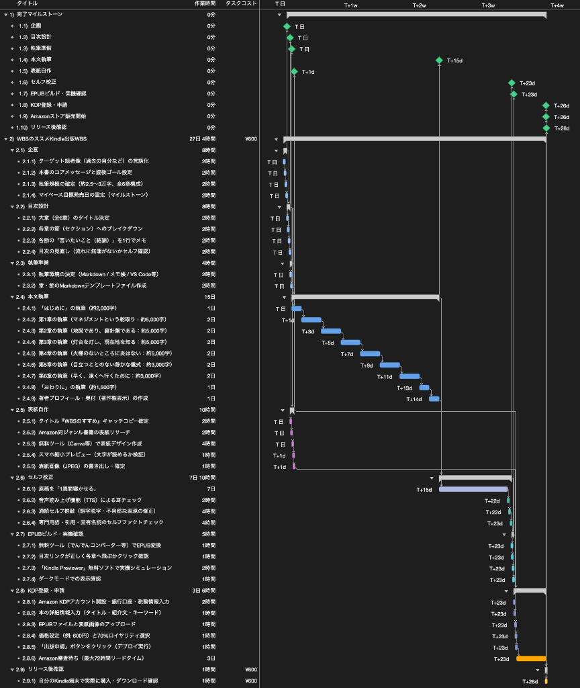
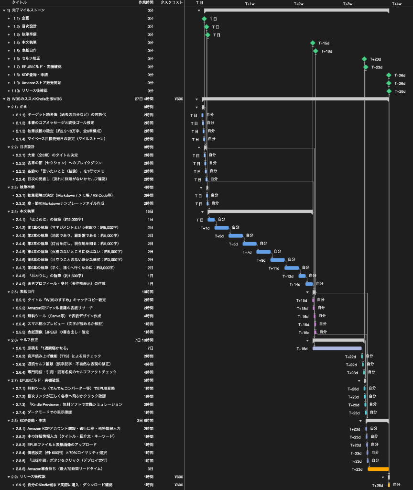

WBSの進め 電子書籍（Kindle）を出版するWBSを作ってみた
今回は「WBSで覗いてみた」シリーズとして、「WBSの進め 電子書籍（Kindle）を出版するWBS」を作成しました。
Amazonが提供するKindle Direct Publishingの普及により、個人でも出版社を通さずに自著を電子書籍として全世界へ配信できるようになりました。今回は、構想から販売開始までの全工程を外部委託を行わず自分1人の手番だけで完結させる想定でWBSに分解し、どのようなタスクが存在し、工期やスケジュールがどのように推移するのかを検証していきます。
※そもそも「WBSとは何か？」「平準化とは何か？」について詳しく知りたい方は、こちらの記事「WBSの勘所」や「ガントチャートの決め手は平準化」も合わせてご覧ください。
1. 想定した書籍の目次構成と前提条件
今回は『WBSの進め』という仮の書籍を想定し、その制作プロセスを元にWBSを作成しました。サンプルのWBSではありますが、目次構成も真剣に検討しています。想定した章構成は以下の通りです。
- はじめに
- 第1章：プロジェクトとは マネジメントという舵取り
- 第2章：WBSとは 地図であり、羅針盤である
- 第3章：計画・進捗とは 灯台を灯し、現在地を知る
- 第4章：炎上・デスマーチとは 火種のないところに炎はない
- 第5章：完遂とは 目立つことのない静かな儀式
- 第6章：AIエージェントとは 早く、遠くへ行くために
- おわりに
本書は約25,000〜30,000文字程度のボリュームを想定しています。体制は著者1名による完全セルフ出版とし、編集や校正、表紙デザインの外注は行わず、手元の環境や無料ツールを活用して進める前提としました。
全体の作業工程は、企画や目次設計から始まり、執筆準備、本文執筆、表紙作成、セルフ校正、EPUB変換、KDPへの登録申請、販売開始に至る一連の作業で構成されています。
2. 依存関係の定義と全体フロー
洗い出したタスクに対して、先行・後続の論理的な依存関係を設定し、作業担当者を割り当てていない状態のガントチャートを作成しました。

このチャートからは、各工程がどのような順序でつながっているのかが分かります。
企画と目次設計が完了した時点で、後続の工程は本文執筆と表紙自作という2つの独立した作業ラインに分岐します。表紙制作は目次とタイトルが決まっていれば本文の執筆完了を待たずに着手できるため、理論上は執筆の初期段階で並行して進めることが可能です。
本文執筆が完了した後は、セルフ校正、EPUBビルド、KDP登録・申請へと直列に工程が進みます。この段階での全体の所要期間は、本文執筆の15日間に加え、校正における冷却期間の7日間やAmazonの審査待ち3日間などを含め、約27日4時間となっています。
3. 全作業を自分1人に割り当てて平準化してみる
次に、すべての作業タスクにリソースとして自分を割り当て、作業の重複を解消するリソース平準化を行いました。

作業者が1名の場合、同時に複数のタスクを進めることはできないため、並行して走っていたタスクは自動的に直列化されます。
担当者未設定の状態では目次設計の直後に並行着手されていた表紙自作が、本文執筆の完了後へとスライドしています。執筆期間中は執筆作業に専念し、初稿が完成したタイミングで表紙デザインに着手する現実的なスケジュールへと調整されました。
ここで注目すべき点は、タスクが直列化したにもかかわらず、プロジェクト全体の工期が27日4時間のまま変化していないという点です。表紙作成に必要な所要時間は約10時間程度であり、本文執筆の直後に表紙作成を行っても、後続する校正や申請のクリティカルパスに影響を与えず、全体のスケジュール内に自然に収まることが分かります。
4. プロジェクトにかかる費用の構造
最後に、本プロジェクトにかかる費用の構造についてまとめます。
今回のモデルでは外部委託を行わず、執筆からデザイン、データ変換まで手元の環境や無料ツールを活用して進めるため、制作段階での金銭的な費用はかかりません。また、KDPのアカウント開設や出版申請自体も無料で行えます。
そのため、本プロジェクトで発生する費用は、リリース後に自分の端末で購入・表示確認を行う代金（約600円）程度となります。外注費や印刷製本といった在庫リスクを抱えずに完結できるため、金銭的な負担を抑えて手軽に挑戦できる点も電子書籍出版の特徴と言えます。
終わりに
今回は、電子書籍出版を題材にWBSを作成してみました。
1人だけで進めるプロジェクトであっても、必要なタスクを分解し、依存関係やリソースの制約を可視化することで、作業の優先順位や現実的な所要期間を論理的に把握することができます。
日常の個人プロジェクトや業務のタスク整理のヒントになれば幸いです。
なお、プロジェクト計画の基礎となるWBSの作り方や平準化の考え方について詳しく知りたい方は、「WBSの勘所」や「ガントチャートの決め手は平準化」もぜひ合わせてご覧ください。
最後までお読みいただきありがとうございました。